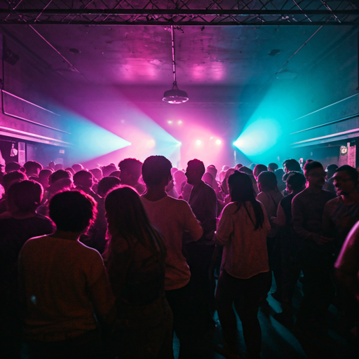
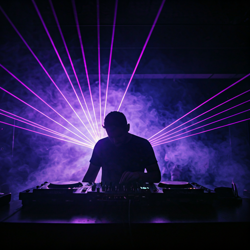

Restless creators
Artists and builders who believe scenes should stay open, intimate, and human.
Overture is a community of listeners, artists, hosts, and cultural believers building a more visible and fair local live music ecosystem together.

Overture exists because local culture should not depend only on luck, private networks, or exhausted individuals holding everything together. It should be something people can gather around, contribute to, and feel part of.
This is for people who want more from live music than transactions: more presence, more connection, more local meaning.
Artists and builders who believe scenes should stay open, intimate, and human.
Hosts, programmers, and neighborhood connectors who care about atmosphere and fit.
People who want their support to become visible in the rooms and relationships around them.

When you join Overture, you are not simply buying access. You are participating in a local cultural mechanism.
A stronger local scene is made of many small acts of commitment: a subscription, a show attended, a room filled, a new artist discovered, a venue revisited, a conversation after the concert.
Over time, Overture can become more than a concert platform: a network of local cultural circles, a place of discovery, and a more transparent way of participating in the city’s cultural life.